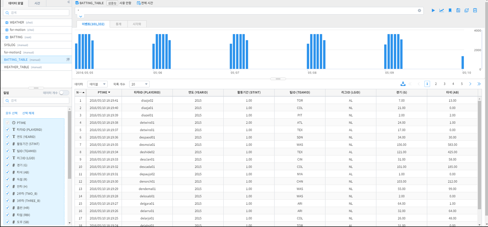
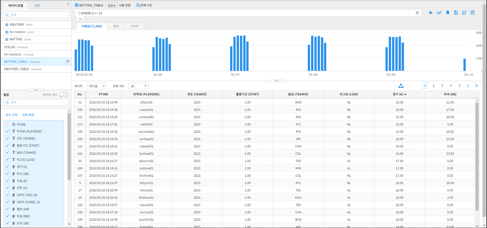
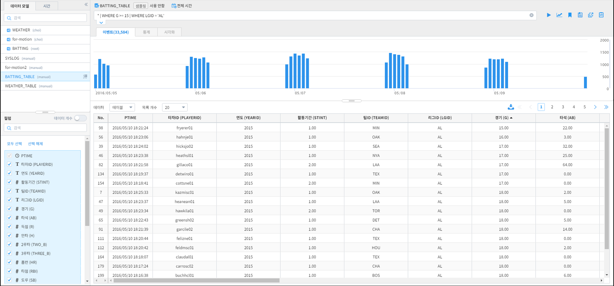
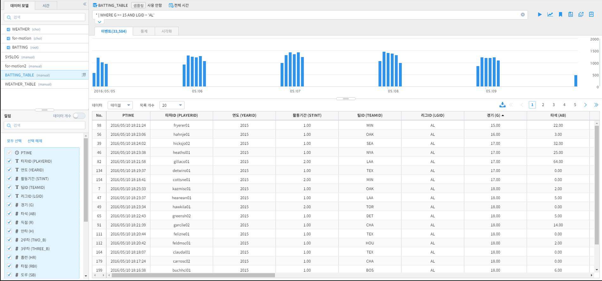
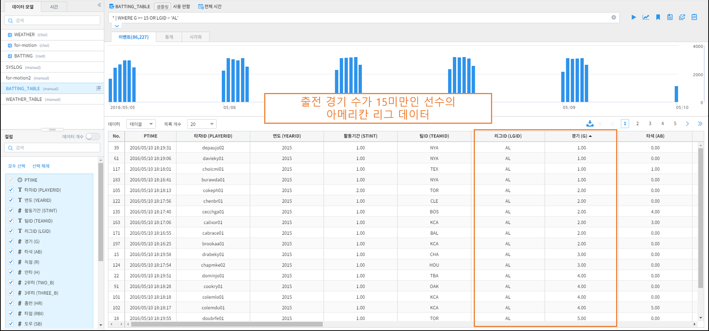

1.1. 조건에 맞는 데이터 검색¶
1.1.1. 개요¶
IRIS [검색] 메뉴에서 지원하는 Command 를 이용하여 특정 조건에 부합하는 데이터를 조회하는 방법을 기술합니다.
1.1.2. 단일 조건을 만족하는 데이터 검색¶
아래 그림은 미국 야구 타자들의 경기 실적 데이터입니다.
{kind=link}
예를 들어, 아래 조건에 부합하는 데이터를 검색하고자 한다고 가정합니다.
조건1. 출전 경기 수가 15회 이상인 선수의 데이터만 조회
위와 같은 조건을 적용하기 위해 IRIS 검색의 Command 《WHERE》를 이용합니다.
[검색 바]에 아래와 같이 입력합니다.
* | WHERE G >= 15
입력한 후 우측 [실행] 버튼을 누르면, 아래 그림과 같이 출전 경기 수가 15회 이상인 선수들의 데이터만 표시됩니다.
{kind=link}
1.1.3. 여러 조건을 만족하는 데이터 검색¶
1.1.3.1. 파이프 문자로 여러 조건을 묶어서 검색¶
[검색] 화면의 여러 Command를 동시에 적용할 때 파이프 문자( | )를 사용합니다.
이 점을 이용하여, 다수의 《WHERE》 Command를 파이프 문자로 이어서 여러 조건을 동시에 적용할 수 있습니다.
예를 들어, 아래 조건에 부합하는 데이터를 검색하고자 한다고 가정합니다.
조건1. 출전 경기 수가 15회 이상인 선수의 데이터만 조회
조건2. 아메리칸 리그(AL)에서의 실적 데이터만 조회
위와 같은 조건을 적용하기 위해 [검색 바]에 아래와 같이 입력합니다.
* | WHERE G >= 15 | WHERE LGID = 'AL'
입력한 후 우측 [실행] 버튼을 누르면, 조건1과 조건2가 동시에 적용된 데이터만 표시됩니다.
{kind=link}
1.1.3.2. AND, OR, IN 을 이용하여 조건 생성¶
WHERE Command는 AND, OR, IN 문법을 지원합니다.
1.1.3.2.1. AND 조건 생성¶
여러 조건이 동시에 적용되어야 할 때 사용합니다.
앞서 진행한 《파이프 문자로 여러 조건을 묶어서 검색》을 AND 로 구현할 경우, 명령어는 아래와 같습니다.
* | WHERE G >= 15 AND LGID = 'AL'
입력한 후 우측 [실행] 버튼을 누르면, 앞서 진행했을 때와 동일한 결과가 표출되는 것을 확인할 수 있습니다.
{kind=link}
1.1.3.2.2. OR 조건 생성¶
여러 조건 중 하나라도 만족하는 데이터를 표출해야 할 때 사용합니다.
앞서 진행한 《파이프 문자로 여러 조건을 묶어서 검색》에 사용된 조건들 중 1개라도 부합할 경우 데이터가 표시되게 한다면,
[검색 바]에 입력할 명령어는 아래와 같습니다.
* | WHERE G>=15 OR LGID = 'AL'
입력한 후 우측 [실행] 버튼을 누르면, 앞서 진행했을 때와 달리, 1) 출전 경기 수(컬럼 G)가 15 미만인 값과 2) 리그ID(컬럼 LGID)가 〈NL’인 값도 검색 되는 것을 알 수 있습니다.
예) 출전 경기 수가 15미만인 선수의 아메리칸 리그 실적 데이터
{kind=link}
{kind=link}
1.1.4. 주의사항¶
[Notice 01] IN 문법은 대상 컬럼이 "TEXT" 일 때만 가능합니다.